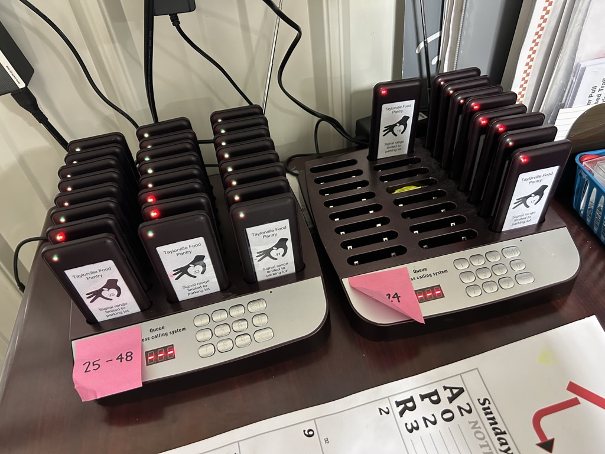
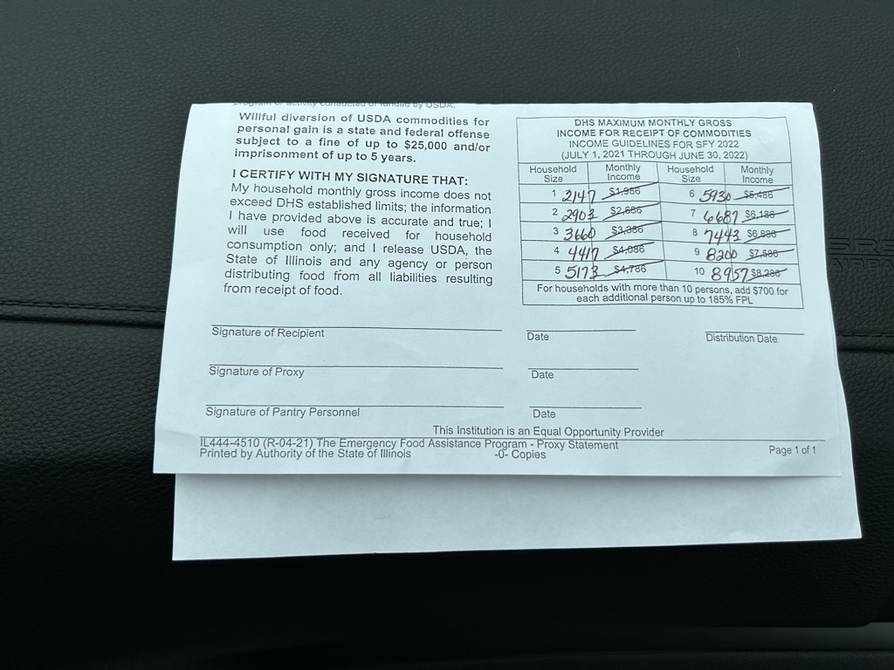

Taylorville Food Pantry
Taylorville Food Pantry
There are some additional info that is needed to be known about. First, we feature these electronic devices to anyone that needs our service. When it is someone’s turn, we signal the device they hold that lets them know that it is their time to come in. It makes it convenient for both us and the people wanting to get in.
Second, we have some conditions that you have to follow for you to receive our service. It is dependent on how much money you make in a month, how many people you take care of and if you’re at the proper age.
We announce some events or celebrations over at our Facebook page, so click the link for anything going on: Facebook